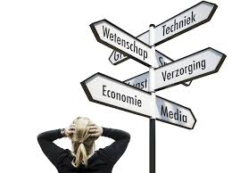

Studie keuze
Als een 6 jarige jongen vond ik het leuk om met elektronische apperaten te werken. Ik heb al verschillende telefoons en computers opengemaakt met behulp van mijn vader, want ik vond het leuk om het ingewikkelde systeem te zien van het moederbord. Ik voelde me thuis achter de computers van school. Ik heb tijdens de middelbare school veel gebruik gemaakt van de computer. Ik was tijdens de middelbare school bezig om soort van te "hacken", omdat ik dat heel interessant vond. Bijv: op school was het niet de bedoeling dat je op CMD kan gaan. Maar ik heb een manier gevonden om dat toch te doen. Dat vond ik geweldig natuurlijk, en kon elke leerlingnummer zien die op het gehele Calvijn College zat. Ik kon ook zien dat er verschillende test accounts waren die ze gebruikte om het account systeem waarschijnlijk te testen. Tijdens de middelbare school had ik eerst bedacht om engineering te gaan doen vanwege Mechatronica. Ik was naar een meeloopdag gegaan vanwege Mechatronica, maar ik vond het toch niks. Dus ik ging daarna kijken voor ICT. Dat klikte direct en was 100% zeker dat ik ICT zou gaan doen
Dus ik heb voor ICT gekozen omdat ik interessant vind, en het leuk vind om het leven efficienter te maken doordat er programma's het voor ons doen, zodat wij meer tijd hebben voor iets anders.
